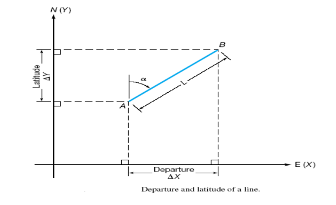
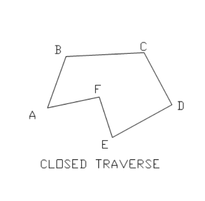
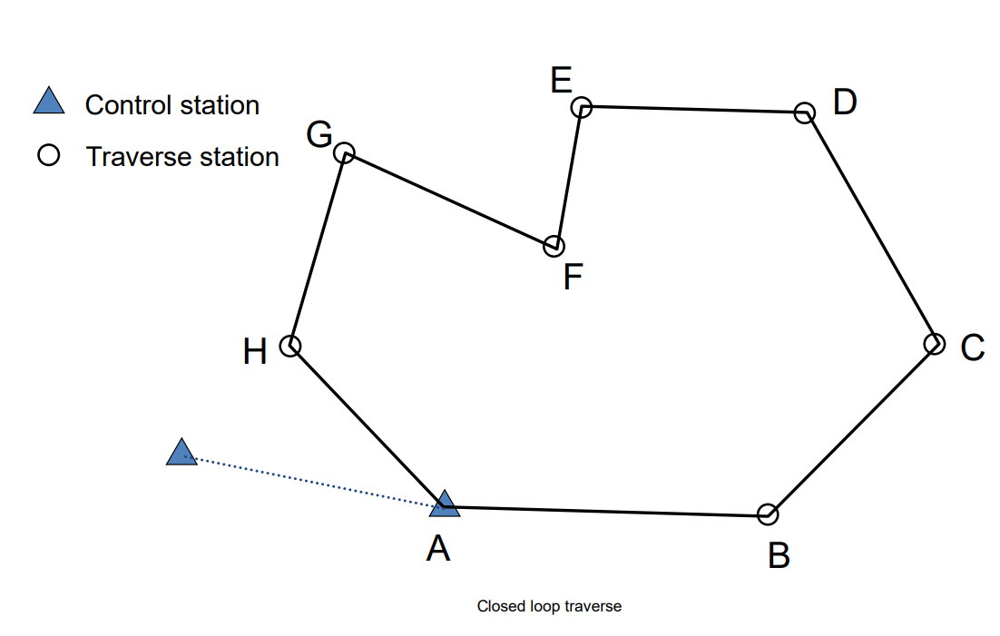
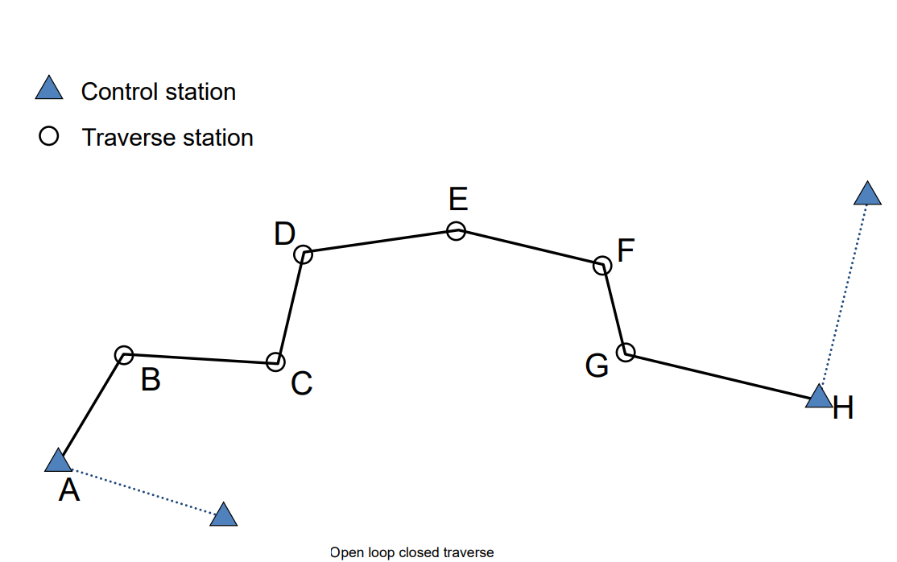

Traversing
Introduction
Traversing is a type of control survey in which the length and direction of a series of connected lines are measured using distance and angle measuring instruments, respectively. It is used to provide horizontal control points in dense and narrow areas where triangulation is not possible. Traverses are often more accurate than triangulation and trilateration and are sometimes referred to as triangulateration. In traversing, an established station on a connected line is called a “traverse station,” the line between two stations is called a “traverse leg,” and the angle between two traverse legs is called a “traverse angle.”
Objective and Purpose
The purpose of traversing is based on the basic principle of surveying “working from whole to the part,” where highly precise control points are not provided. Therefore, traversing is carried out for the following purposes:
- To provide control points for chain, compass, PT, topographical, cadastral, and photogrammetric surveys.
- To fix the alignment for different engineering projects when better accuracy is required.
- To ascertain the coordinates of the boundary pillar.
- To calculate the area of a closed plot.
- For the demarcation of national or international boundary pillars.
Principle of Traverse
The principle of traversing is that if the direction and length of any line are known, then the coordinates of its end point can be found from the given coordinates of its starting point.
| Latitude (∆N) | Departure (∆E) |
|---|---|
| d cosα | d sinα |
If the coordinate of point A is known, then the coordinate of point B can be calculated as follows:
- E2 = E1 + ∆E
- N2 = N1 + ∆N
Classification of Traverse
Traverses can be classified as follows:
1. On the Basis of Starting and Ending Points
- Closed Traverse: Starts from a known station and ends at the same or another known station. It has more checks and is accurate.

Types include:
- Closed Loop Traverse: Starts from a known point and ends at the same point. It is geometrically and mathematically closed. 
- Link Traverse or Open Loop Closed Traverse: Starts from a known station and closes to another known station. It is geometrically open but mathematically closed. 
- Open Traverse: Starts from a known or unknown station and ends at another known or unknown station. It is geometrically and mathematically open, with checks only possible by additional observations.

2. On the Basis of Used Instruments and Methods
- Chain Traverse: Linear measurement is taken by chain; angle is set out by tie line. Used for flat, level, and small areas.
- Compass Traverse: Magnetic compass is used for measuring direction; tape is used for distance measurement. Used for small, bushy grounds where chain traverse is not possible.
- PT Traverse: Alidade is used for direction; distance is measured by tape. Used for comparably larger areas.
- Theodolite Traverse: Theodolite is used for angular measurement; steel band is used for linear measurement. Precise and accurate control point establishment.
- Tacheometry Traverse: Angle measurement as theodolite; distance by stadia method. Adjustment by transit rule.
3. On the Basis of Accuracy and Precision
- Primary Traverse: Highly precise; uses long-range EDM and precise theodolite for angle measurement. Used where second-order triangulation is not possible.
- Secondary Traverse: Conducted under controlled area of primary traverse. Used to establish third and fourth order points.
- Tertiary Traverse: Conducted under controlled area of primary and secondary order traverses. Used for cadastral purposes.
Selection of Traverse Station
- Work from whole to part as far as possible.
- Keep the number of stations to a minimum.
- Keep the length of traverse lines as long as possible to reduce the effect of centering errors.
- Select stations based on the requirements of the work.
- Stations should be intervisible.
- Stations should be on firm, level ground.
- Ground conditions should be suitable for linear measurement.
- To reduce shimmering effects, the line of sight should be generally above 1 meter.
Traverse Computation
1. Layout of Traverse Computation
Observed angles and measured distances are set up as Gale’s table.
2. Angular Adjustment
Once the traverse angles are within the allowable range, the remaining misclosure is distributed among the angles. This process is called balancing the angles:
- Arbitrary Adjustment: If misclosure is small, it may be inserted into any angle arbitrarily.
- Average Adjustment: Misclosure is divided by the number of angles and correction is inserted into all angles.
- Adjustment Based on Measuring Conditions: Misclosure may be divided and inserted into the two angles affected if a line has particular obstructions.
3. Ascertaining the Bearing of the First Traverse Leg
Reduced bearing is calculated as:
Reduced bearing = tan-1 (∆E / ∆N) = tan-1 [(E2 - E1) / (N2 - N1)]
Calculated bearing is converted into WCB (Whole Circle Bearing).
4. Computing the Bearing of Remaining Legs
For the bearing of the next leg, apply the following conditions to the sum of the bearing of the preceding leg and the corrected clockwise angle:
- If the sum is more than 180°, subtract 180°.
- If the sum is less than 180°, add 180°.
- If the sum is more than 540°, subtract 540°.
Alternatively, the bearing can be computed as:
Forward azimuth of line = Back azimuth of previous line + Clockwise (internal) angle
The back azimuth of a line is computed from:
Back azimuth = Forward azimuth ± 180°
5. Computation of Consecutive Coordinates
Latitude (∆N) and Departure (∆E) are calculated as:
Latitude (∆N) = d cosαDeparture (∆E) = d sinα
If the coordinate of point A is known, then the coordinate of point B can be calculated as:
E2 = E1 + ∆EN2 = N1 + ∆N
6. Calculation of Closing Error and Accuracy
The closing error is the difference between the starting and ending positions of the traverse. It occurs due to errors in easting (departure) and northing (latitude). The magnitude and direction of the closing error can be calculated as:
Error in departure = eE = ∆EError in latitude = eN = ∆NClosing error (magnitude) = (eE2 + eN2)1/2Direction of closing error = tan-1 (eE / eN)Accuracy = e / p = 1 / p / ewherepis the perimeter of the traverse.
7. Balancing the Consecutive Coordinates
Balancing means applying corrections to latitude and departure. Methods include:
- Bowditch Method: Applies proportional adjustments based on the distances between the stations. Used when angular and linear precision are equal.
- Transit Method: Used where angular measurements are more accurate than linear measurements. Corrections are proportional to the latitude (or departure) of each traverse leg.
- Graphical Method
- Least Square Adjustment
- Arbitrary Method
8. Calculation of Independent Coordinates
Independent coordinates are those corresponding to a common origin and are not dependent on the preceding point. For a traverse leg AB with consecutive coordinates (∆E, ∆N) and independent coordinates of A (E1, N1), the independent coordinates of B (E2, N2) are:
E2 = E1 + ∆EN2 = N1 + ∆N